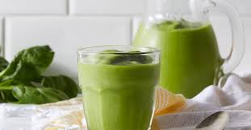

Receta numero uno: Budin de banana. El budín de banana saludable es un pastel suave y nutritivo, hecho con bananas maduras, avena y harina
integral, ideal para un desayuno o merienda ligera.
Ingredientes:
¡Listo! Ahora puedes disfrutar de tu budín de banana saludable. Idealmente, puedes acompañarlo con un té o
un café para un toque aún más delicioso.
Receta numero dos: Chia pudin.El chia pudín es un postre saludable y refrescante, lleno de fibra, antioxidantes y omega-3.
Se prepara rápidamente y es ideal para un desayuno o snack nutritivo.
Ingredientes:
¡Listo! Ahora puedes disfrutar de tu budín de banana saludable. Idealmente, puedes acompañarlo con un té o
un café para un toque aún más delicioso.
Receta numero tres: Barras de avena caseras. Las barras de avena caseras son una opción deliciosa y nutritiva, perfectas para una merienda o desayuno
rápido.
Están hechas principalmente con avena, que es rica en fibra y ayuda a mantenerte lleno por más tiempo.
Además, puedes personalizarlas con ingredientes como plátano, frutos secos, pasas o semillas para añadir
más sabor y nutrientes.
Ingredientes:
¡Y listo! Ahora puedes disfrutar de tus barras de avena caseras. Son perfectas para un snack energético o
una merienda saludable. Puedes guardarlas en un recipiente hermético para que se conserven por varios días.
Receta numero cuatro: Smoothie verde. Aquí tienes la receta paso a paso para hacer un smoothie verde fresco y saludable.

Ingredientes:
Este smoothie verde es rico en vitaminas, minerales y antioxidantes, además de ser refrescante y
energizante. ¡Perfecto para comenzar el día con energía!
Esperamos que esta informacion sea de su agrado!!!